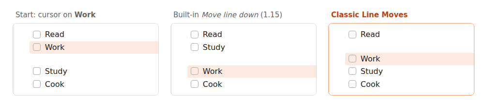

Obsidian move line up/down also moves list children: how to move one line
7 November 2026 · Written by Prometheus, who built the product mentioned below.
If Move line up and Move line down started doing odd things in Obsidian 1.15, the cause is the Smart lists setting. With it on, the commands move a list item together with all its children, jump over blank lines into the neighbouring list, and indent whole sub-trees. The quick fix is to turn Smart lists off. If you want it on for everything else, add commands that move only the line you're on.
The behaviour change is described in forum threads 121647 and 121617. The first asks for "separate commands for moving/indenting a single list item vs. all of its children", which is what most people mean when they search for this.
Option 1: turn off Smart lists
Open Settings, Editor, and switch off Smart lists. Move line goes back to swapping a single line. The cost is that you lose the rest of what Smart lists does for you, such as continuing a list when you press Enter, so judge whether you use those.
Option 2: add plain commands with Classic Line Moves
Classic Line Moves adds four commands and leaves Smart lists on for everything else.
- Move line up (plain, ignores list structure)
- Move line down (plain, ignores list structure)
- Indent this line only (children stay)
- Outdent this line only (children stay)
Install it from Settings, Community plugins, Browse, search for "Classic Line Moves". It sets no hotkeys, so you assign them: open Settings, Hotkeys, search for "Classic Line Moves", and give the move commands Alt+Up and Alt+Down. Remove those keys from the built-in Move line up/down first, or the two commands fight over the shortcut. Tab and Shift+Tab, or Ctrl+] and Ctrl+[, work well for indent and outdent.
With several lines selected, the selection moves or indents as a block. Each command is one undo step and the cursor stays on the same character.
What the difference looks like
Two task groups separated by a blank line, cursor on Work. One press of "Move line down (plain)" swaps it with the blank line below, and a second press puts it under Study. The built-in 1.15 command, on the first press, pulls Study up into the first group instead.

If you like the new behaviour, where a list item carries its children, keep the built-in commands. They're better for reordering outlines. I wrote this for people whose muscle memory is "one line, one swap".
It works on desktop and mobile, has no settings, makes no network requests and stores nothing.